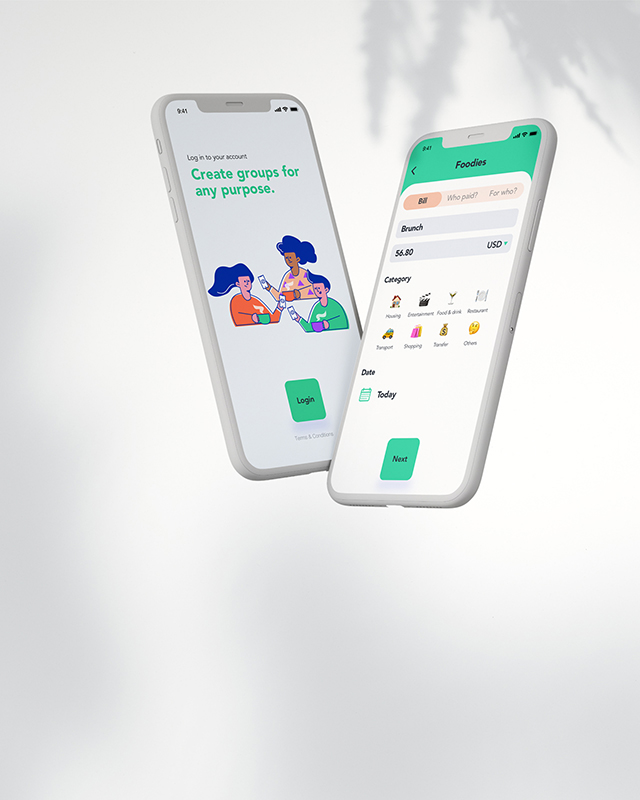
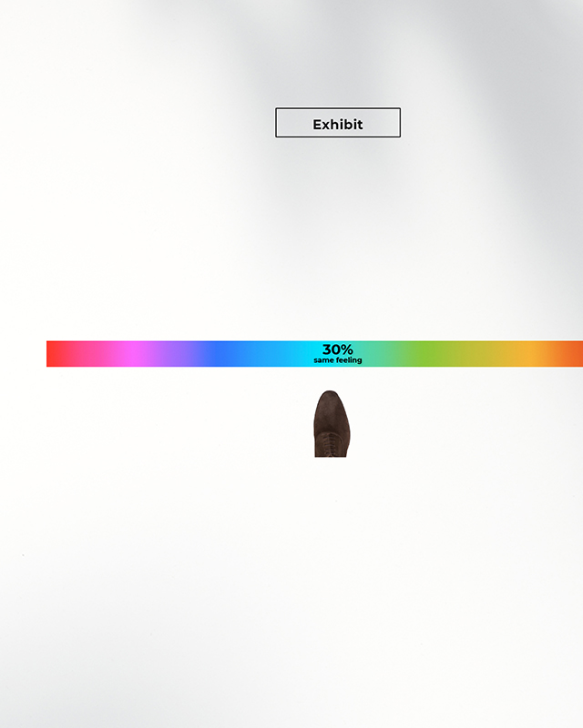
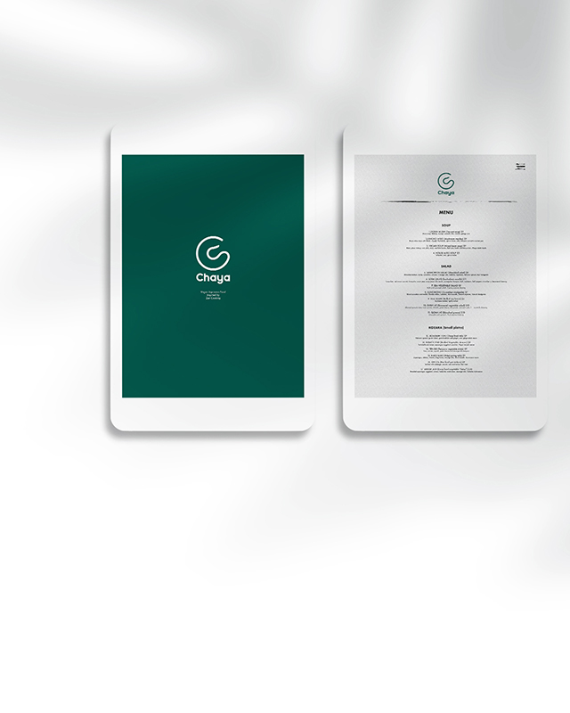
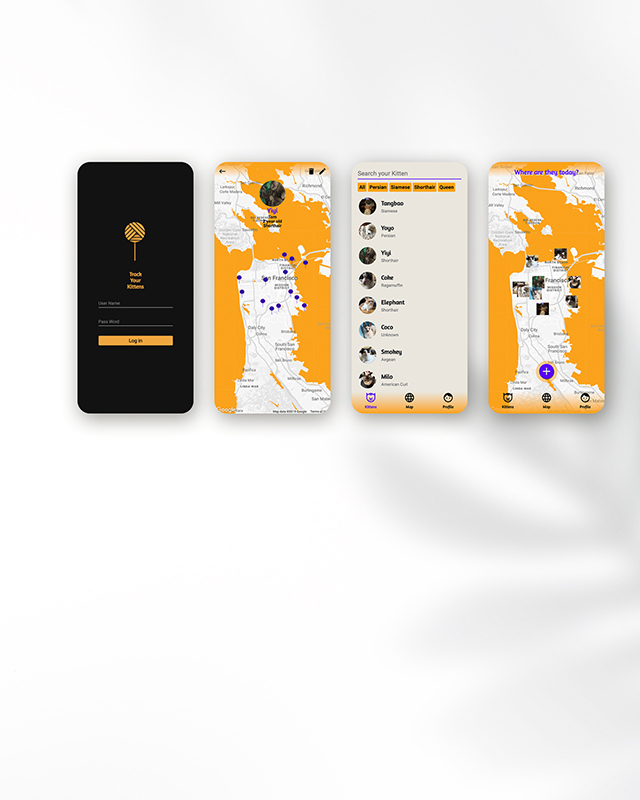
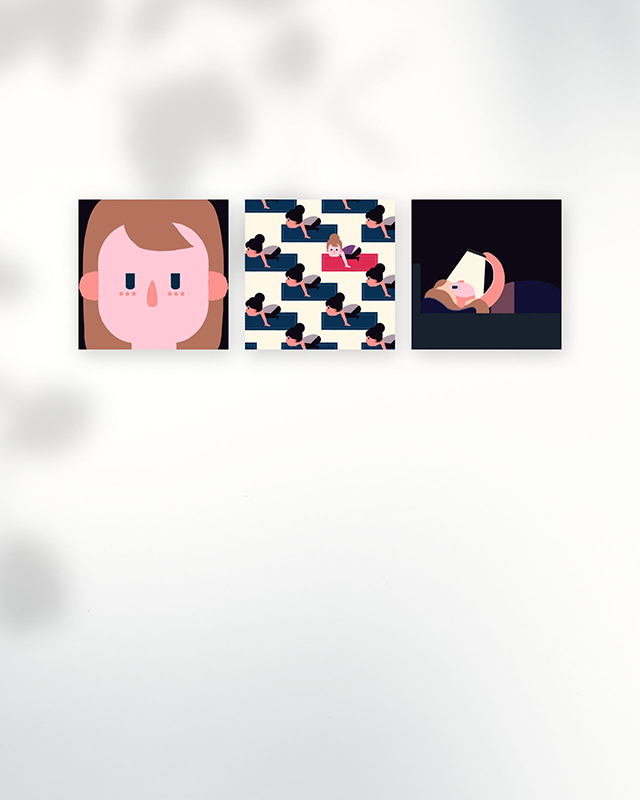

work
about
work
about
I'm Qianwen Liu.
A UI/UX Designer, a passionate problem solver
Selected works —
RISE
Rise Up
to the Next Level
View project

Splitwise
Touching up blemishes
on Splitwise
View project

Feelings
Share people's feelings in the exhibition
View project

Chaya
Vegetarian Japanese cuisine brand design
View project

Track Kittens
Responsive mobile app
for locating the cats
View project

Daily Life
Record personal data
in my life
View project